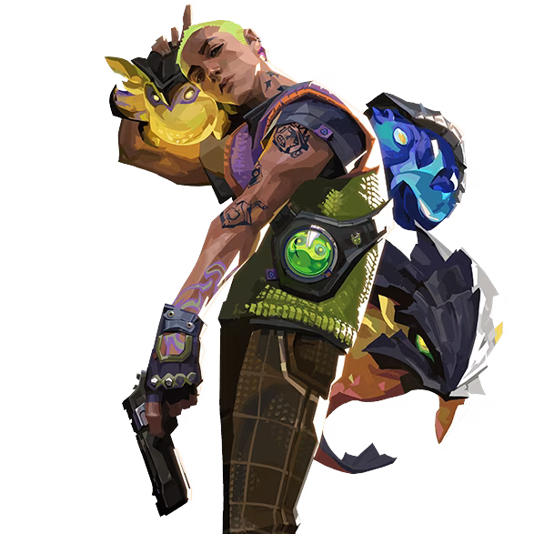

サンセットのマップ

情報・特徴
サンセットはミッドエリアが広い影響で通路が複雑に入り組んでおり、さらに要所々々に設置されている小窓やスイッチで稼働するシャッターなどのギミックが特徴的です。
また、ミッドが広い反面、両方のサイトが狭くなっているので索敵ドローンやグレネードなどの狭所に対して有効なアビリティが重要となるマップでもあります。
スイッチで開閉できるシャッター
サンセットのミッドとBマーケットを繋ぐ通路にはスイッチで稼働するシャッターが設置されており、リテイク妨害・遅延などに利用することができます。
また、閉じられたシャッターは銃撃などの攻撃で破壊することができますが、ハイミッドから射線を通しやすい場所に位置しているので破壊する際には注意する必要があります。
マップ各所に設置されている小窓
サンセットのマップ各所には小窓が設置されており、アビリティを投げ入れたり、ジェットなどで射線を通すことができます。
特にAサイト側の小窓はディフェンダーで、Bサイト側の小窓はアタッカーで活用しやすい位置にあるので覚えておきましょう。
全体マップ・マップの詳細
サンセットのおすすめ構成
サンセットは広いミッドエリアと入り組んだ通路が組み合わさった構造をしているため、ミッドを確保した側がラウンドを有利に運びやすくなるマップです。
そのため、広いミッドの射線をアビリティ１つで切ることができるヴァイパーとハーバーは非常に相性が良く、攻守共に性能を十全に発揮することができます。
サンセットは通路だけでなくサイト内も入り組んだ構造をしているため、確実かつ素早いクリアリングを行えるスカイやフェイドが非常に有用です。特にサンセットは角待ちを行えるポイントが多いため、トレイルブレイザーやプラウラーなどドローン系の索敵アビリティの優先度が高くなっています。
| おすすめチーム構成 | ||||
|---|---|---|---|---|
 オーメン |
 サイファー |
 ソーヴァ |
 ゲッコー |
 レイズ |
サンセットの基本的な攻め方
Aサイト側の立ち回り
サンセットのAサイト側を攻める場合は、エントリーやローテートの起点となるAメインとAエルボーを確保することが重要になります。
特にディフェンダー側がバトルフェーズ開始直後にAメインの階段付近にスモークを展開したり、Aエルボーの小窓から情報を取得される動きが非常に厄介なので、侵攻する際は手前のエリアを必ずグレネードやフラッシュでクリアリングするようにしましょう。
また、敵が「オペレーター」を持っている場合はAリンクから射線を通している可能性が高いので、敵のクレジット状況を確認しつつ注意しておきましょう。
Aサイトでプラントを行う場合は、４方向から射線を通すことができる黒コン裏にプラントするのがおすすめです。特に黒コン裏は定点を覚えなくともグレネードなどで楽に妨害できるだけでなく、Aサイト西側にある緑箱の裏から安全に壁抜きをできるポジションでもあります。
Bサイト側の立ち回り
サンセットのBサイト側の侵攻ルートはBメインしかないため、サイト確保するためにはミッドを確保してBマーケットも抑える必要があります。
一方で、Bサイトは中央に巨大な塔が設置されており、Bサイト手前のクリアリングさえできればプラント可能となる構造でもあるので覚えておきましょう。
特に、ラッシュをする際は重要です。
Bサイトでプラントを行う場合は、Bサイト手前の入り口付近にプラントするのがおすすめです。入り口付近は３方向から射線を通せるだけでなく、解除フェイクをされても音を立てずに移動できるエリアが限られるので、リテイク妨害をしやすいポジションでもあります。また、カーテンによって素早くエリアを確保できるヴァイパーとハーバーならばラッシュで楽にプラントできる位置なのも魅力のひとつです。
サンセットの基本的な守り方

Aサイト側の立ち回り
サンセットのAサイトを守る場合は、攻撃側が必ず通過しなければならないAメインを抑えることが重要になります。
コントローラーはバトルフェーズ開始直後にスモークを展開することで遅延を行うことができ、ラッシュ時にはULTオーブがあるポイントにグレネードなどを入れればカウンターを狙うことも可能です。
ジェットなど小窓から情報を取れるアビリティを持っているキャラは、AエルボーからAロビーの侵攻を監視することができます。特に、サイファーはカメラで情報を取り続けることができ、ジェット・レイズ・セージはキルも狙うことができるので上手く活用しましょう。
Bサイト側の立ち回り
サンセットのBサイトは侵攻ルートがBメインだけなので、序盤はサイト入り口からピークして侵攻を確認し、敵の侵攻に合わせてサイト内に引いて入り口にスモークやグレネードを展開すれば遅延することができます。
ただし、アタッカー側にミッドを確保されるとBマーケットから侵入されやすくなるので、Bサイトを防衛する際はミッドの状況も常に確認しておく必要があるので覚えておきましょう。
特に、Bサイトの防衛人数が少ない状態でBメインとBマーケットに侵入されると守り切るのは難しいので、大人しくリテイクを狙うようにしましょう。